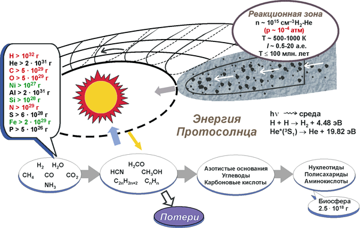
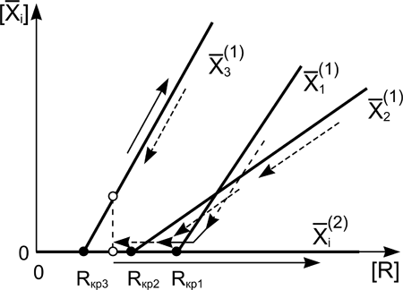
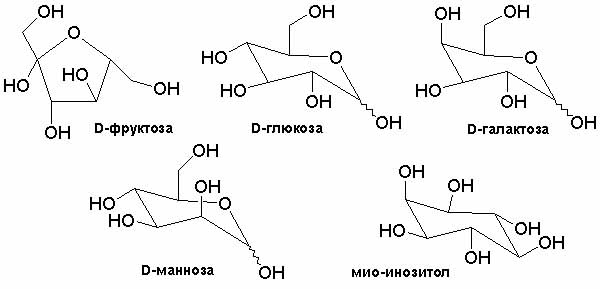
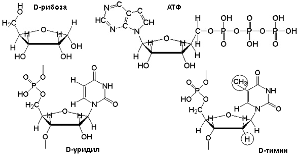
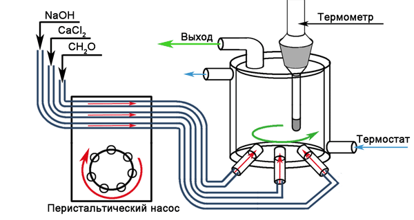

| Новое в теории появления жизни Академик В. Н. Пармон «Химия и жизнь» №5, 2005 http://elementy.ru/lib/25618 |
В космосе
Итак, образование планет Солнечной системы и возникновение жизни на Земле произошли практически в один момент во временных масштабах Вселенной. Поэтому, если бы удалось решить проблему планетообразования, это могло бы стать исходной точкой и для решения проблемы зарождения жизни. Ведь научные вопросы часто решаются комплексно. Но как получить данные о происшедшем событии, если известен лишь конечный результат? Этим занимаются сейчас физики Института катализа и нескольких других институтов СО РАН. Основной инструмент их работы — методы, разработанные для моделирования в лабораторных условиях ядерного взрыва. То есть физики вместе с математиками собирают достаточно надежные данные о каждом процессе, влияющем на картину взрыва, а потом моделируют его на компьютере. Чем мощнее компьютер, чем больше он учитывает процессов и параметров, тем более реальной получается картина. Проверить работу компьютера можно, сопоставив расчеты с наблюдением природных явлений — например, вспышек на Солнце. Естественно, на каждом этапе моделирования надо строго соблюдать все без исключения фундаментальные физические законы, в частности законы сохранения энергии, импульса и т. д. Сначала сибирские ученые проанализировали наиболее популярные существующие теории образования планет — и остались неудовлетворены. Появилось новое предположение: формирование планет происходило в тех же условиях, в которых каталитические химические реакции органического синтеза. И следующий шаг: именно каталитические реакции привели к возникновению жизни на Земле, а затем — к естественному отбору. Мы уже давно свыклись с представлением о том, что планеты Солнечной системы зародились из первичного газопылевого облака, окружавшего Протосолнце около 5 млрд лет тому назад. При этом многие ученые предполагали, что планеты Солнечной системы сформировались при столкновении твердых тел. Тем не менее, согласно В. С. Сафронову, если тело величиной порядка тысячи километров столкнется с телом меньшего размера, осколки притянутся к крупному, а вот средние тела (несколько сот километров в диаметре) не могут ни укрупниться, ни поглотиться. Они просто разрушаются при ударе. Что же заставило систему самоорганизоваться и привело к образованию планет земной группы? Таким механизмом должно быть развитие коллективной неустойчивости, одновременное объединение многих малых тел. Не будем рассматривать в этой статье физическую и математическую часть модели (см. В. Н. Снытников, В. Н. Пармон «Жизнь создает планеты?» — «Наука из первых рук», январь 2004). Скажем только, что модель предполагает формирование солитонов (одиночных волн плотности материи) в околозвездном диске. А мы займемся чистой химией. Огромное газопылевое облако, вращающееся вокруг Протосолнца, было не просто облаком, а огромным каталитическим реактором, в котором вовсю шли химические реакции и синтезировались разнообразные органические соединения. Почему каталитическим? А потому, что в этом реакторе находились мириады частиц допланетной пыли, содержавшей железо, никель и кремний, — именно они составляли, как полагают, основу первичного газопылевого облака. Там же в избытке находились и газообразные реагенты (основные компоненты межзвездного и межпланетного газа) — водород, угарный газ и т. д. В газопылевом облаке такого состава просто не могли не образовываться органические соединения! Более того, как выяснилось при численном моделировании образования планет, о котором шла речь выше, реакции образования таких соединений были не просто важными, они могли играть решающую роль! Действительно, для слипания твердых частиц «чистой» космической пыли при интенсивном ударе нужен «клей», а образующиеся органические молекулы, закрепляясь на поверхности твердых частиц, образовали необходимый липкий поверхностный слой. Именно он способствовал быстрому соединению пылинок, из которых формировались более крупные частицы, а затем и планетозимали (промежуточные образования) и далее протопланеты. Так, по-видимому, образовались и Земля, и все остальные планеты, астероиды и кометы, которые вращаются сейчас вокруг Солнца. Надо отметить, что описанная система хорошо знакома специалистам — по классификации химиков-каталитиков глобальный космический реактор относится к разряду реакторов «с псевдоожиженным слоем катализатора». Давление и температура газообразных реагентов в зоне формирования планет были типичными для хорошо известных химических процессов. Другие важные характеристики глобального космического реактора, также близки душе технолога — состав катализаторов, реакционной среды и т. п. Из водорода и угарного газа на железо- и никельсодержащих пылинках были обязаны синтезироваться углеводороды и кислородсодержащая органика — например, простые спирты и альдегиды. Все как в промышленности. Понятно, что каталитическая активность космического материала — ключевой момент в уточнении теории образования планет. Недавно в Институте катализа мы экспериментально проверили, что вещество реальных метеоритов в самом деле катализирует эти реакции. Каменные и железо-каменные метеориты, которые мы использовали в эксперименте, по своему составу приближаются к веществам, распространенным в космосе. За 4,6 млрд лет своего существования они спеклись и имеют обычную непористую поверхность, но когда-то, в молекулярных облаках и околозвездном диске, межзвездная пыль состояла из частиц нанометрового размера. Поэтому мы испаряли метеориты при помощи лазера и получали порошки с размером частиц 3–4 нм (это примерно соответствует размеру активного компонента в промышленных катализаторах). Затем смотрели, получается ли что-нибудь из смеси угарного газа, водорода и гелия в присутствии метеоритной пыли при атмосферном давлении и температуре до 500°С. В наших экспериментах с достаточно высокими выходами синтезировались этилен и другие углеводороды. 
Все это означает, что наши планеты сформировались там, где были условия для каталитического синтеза органических соединений, и что первичные органические соединения, из которых потом могла появиться жизнь, образовались уже на допланетной стадии эволюции Солнечной системы (рис. 2). Интересно, что значительная часть первичного «допланетного» органического вещества могла захватываться при формировании планет (хотя основная масса такого вещества, конечно же, разрушается и развеивается в космосе) и стать впоследствии одним из компонентов ископаемого органического сырья, которым мы сейчас пользуемся. Так это или не так — покажут дальнейшие исследования. Еще один очень важный вопрос: насколько жестко предопределено образование планет? Оказалось, что самоорганизация вещества по нашей модели идет в одном направлении и поэтому предопределена. Но место появления уединенной волны повышенной плотности вещества, а следом и формирование планеты на данном расстоянии от Солнца — для нашей модели величины случайные. Правда, из общих соображений следует, что если волна плотности окажется на орбите Венеры, то все летучие вещества (вода, водород, органические соединения) там испарятся: планета появится, а жизнь на ней нет. На орбите Марса слишком холодно. Равно как и на орбите Сатурна — недавно выяснилось, что поверхность Титана (спутника Сатурна) состоит в основном из сжиженных легких углеводородов. Планета, на которой живем мы, попала в самую точку. Здесь есть вода, легкие газы и т. п. Вероятность появления планет на различных расстояниях от Солнца, возможно, определится после дальнейших расчетов, в которых используют дополнительные физико-химические факторы, влияющие на поведение газопылевого облака. Может быть, тогда станет понятно, где проходит граница жизни — до марсианской орбиты или за ней. И это знание сбережет массу средств и сил. |
На Земле
Сразу же после того, как сформировались планеты и на их поверхность попало первое «допланетное» органическое вещество (и даже если не попало), на Земле начались те самые физико-химические процессы, которые породили жизнь. Для научной корректности, а также для того, чтобы можно было подсказать геологам, где искать следы первичной протожизни, сформулируем задачу — договоримся, что именно мы понимаем под феноменом «жизнь» и что могло быть ее первым проявлением. Сегодня ученые считают, что нечто, называемое жизнью, должно отвечать нескольким условиям. Жизнь — это обязательно процесс, то есть функционирование за счет обмена веществом и энергией с окружающей средой. Живые объекты способны к размножению и воспроизведению себе подобных. Наконец, все живые объекты способны к прогрессивной эволюции в сообществе таких же объектов, благодаря наличию у них биологической памяти, способной запоминать признаки, благоприобретенные в ходе естественного отбора по Ч. Дарвину. Причем должна выполняться вся совокупность условий — любое из них в отдельности не делает объект живым. Таким образом, несмотря на то что все процессы в живых организмах — химические, однако взятая отдельно химическая реакция не является жизнью, так же как и «воспроизведение» себе подобных. Например, рост кристаллов не что иное, как саморепликация подобных соединений и структур. Но это не жизнь. Простой обмен со средой веществом и энергией тоже не есть жизнь. К примеру, основной объект исследования Института катализа — каталитические химические процессы, в основе которых лежит именно обмен веществом объема с поверхностью катализатора. Но ведь и химический катализ — это тоже не жизнь. Только тогда, когда появляется биологическая память, дающая возможность накапливать наследственную информацию и передавать ее дальше, можно говорить о жизни. Биологическая память — это основа для естественного отбора, в ходе которого организмы усложняются, адаптируются к окружающей среде и эволюционируют. Во всех живых организмах основой биологической памяти служат молекулы РНК и ДНК. Мы задали себе вопрос: «А возможно ли, что существовали более простые предшественники РНК и ДНК, обладавшие тем не менее свойствами, сходными с молекулярной памятью?» На самом деле очень близки к биологическим автокаталитические системы. Это системы, в которых химическая реакция ускоряется собственными конечными продуктами реакции или предшественниками этих продуктов. Иными словами, в автокаталитических реакциях, как и в сообществе живых организмов, происходит размножение, то есть саморепликация молекул. Простейшая автокаталитическая реакция может быть записана как R + X —> 2 X. После реакции молекулы автокатализатора Х с «молекулой пищи» R получаются две молекулы автокатализатора. При достаточном количестве пищи в системе такое удвоение приводит к лавинообразному росту количества автокатализатора в системе. А теперь посмотрим, как будет вести себя такая автокаталитическая реакция в открытой системе, где есть обмен веществом с окружающей средой, но количество «пищи» ограничено. Расчеты показывают, что существуют два стационарных состояния такой системы. В первом (неустойчивом) количество автокатализатора точно равно нулю. Это понятно: для того чтобы его концентрация росла, необходима исходная затравка в виде хотя бы одной предшествующей молекулы автокатализатора. Во втором стационарном состоянии концентрация автокатализатора линейно увеличивается с увеличением количества пищи. Но при этом концентрация пищи должна превышать некий минимальный уровень, зависящий от свойств конкретного автокатализатора. Если этого не происходит, то количество автокатализатора также станет равным нулю. Таким образом, для автокаталитических реакций существует критический предел, при котором еда еще есть, а автокатализатор уже исчез, то есть вымер. Причем полностью, до единой молекулы. 
Теперь представим, что структура или состав молекулы могут как-то меняться. (Не будем пока называть это мутацией.) Изменение структуры и состава молекулы приводит к изменению ее свойств. Поэтому для каждой измененной молекулы будет своя критическая концентрация пищи. Если концентрация пищи будет уменьшаться до значений ниже критических, то сначала исчезнут те автокатализаторы, для которых эти критические значения количества пищи были максимальны. Если количество пищи снова увеличится, то исчезнувшие типы автокатализаторов не восстановятся уже никогда, потому что исчезли их затравки (рис. 3). Чем это не естественный отбор, аналогичный отбору в биологических популяциях? Читатель сразу спросит: «А что, уже известны такие автокаталитические реакции с мутациями автокатализатора и с элементами «естественного отбора»?». Известна по крайней мере одна, и довольно хорошо — это так называемая «формозная» реакция Бутлерова, которая была открыта в России почти 150 лет тому назад. Синтез сахаров из молекул формальдегида n CH2O —> (CH2O)n
протекает в присутствии ионов кальция или магния при комнатной температуре в водных растворах. Автокатализаторами в реакции Бутлерова служат синтезируемые в ней же сахара. Интересно, что эту реакцию активно исследовали в 70-х годах прошлого века, поскольку хотели с ее помощью получать искусственную пищу во время длительных полетов на Марс. Но безуспешно: направить реакцию Бутлерова на синтез сахаров какой-либо заранее заданной структуры так и не вышло. Всегда получался целый набор продуктов самой различной структуры, который включал не только полезные, но и ядовитые сахара. Проблему бросили, так и не решив. 
Между тем большой набор сахаров (рис. 4) — это не что иное, как прототип мутаций. Изображенные на рисунке сахара одинаковы по атомному составу, но при этом совершенно различны по свойствам. А раз так, то разными должны быть и критические концентрации формальдегида, при которых можно ожидать вымирания сахаров-автокатализаторов при понижении концентрации формальдегида. 
Теперь вспомним, что полные химические названия РНК и ДНК — рибонуклеиновая кислота и дезоксирибонуклеиновая кислота, и корень обоих названий происходит от слова «рибоза». Рибоза — это сахар с пятью атомами углерода, который лежит в основе нуклеотидов, формирующих РНК и ДНК (рис. 5). Нуклеотиды РНК и ДНК отличаются от просто сахаров дополнительными фосфатными группами и азотсодержащими органическими соединениями. Отличие нуклеотидов РНК от нуклеотидов ДНК еще меньше — немного различаются азотистые основания, да в сахарном остатке ДНК не хватает одной гидроксигруппы. Причем если уже есть молекула сахара, то фосфорные и азотные соединения, необходимые для построения нуклеотидов, присоединяются к ней сами без серьезных проблем. Надо отметить, что и другой важный химический компонент живых организмов — переносчик энергии АТФ (аденозинтрифосфат) — тоже содержит моносахарид рибозы. То есть сахара — основа всего живого. И именно молекулы на основе сахаров, а не аминокислот (и следовательно, не белки) ответственны за биологическую память, то есть за отличие живого от неживого. Для того чтобы экспериментально подтвердить наши предположения, несколько лет назад мы возобновили исследования реакции Бутлерова в Институте катализа. Прежде всего надо было выяснить, какие же типы сахаров — наиболее активные автокатализаторы в этой реакции. Это могло бы подсказать и ответ на вопрос, действительно ли возможен естественный отбор в реакции Бутлерова. Следующий принципиальный вопрос — какую роль в реакции играют ионы кальция или магния и каков механизм их каталитического действия. 
Реакцию мы исследуем в довольно простых «проточных» устройствах, которые тем не менее способны моделировать открытые системы с обменом веществ (рис. 6). В стеклянный реактор с хорошо перемешиваемым содержимым подают исходные компоненты, а раствор с продуктами реакции непрерывно вытекает из реактора. Самое важное и сложное — химический анализ того, что получается из формальдегида. Уже первые исследования показали, что далеко не все типы сахаров одинаковы. Кетозы, то есть те из сахаров, в молекулах которых один из атомов кислорода находится в строго определенном месте — активнее, чем альдозы. А самые активные — маленькие сахара с двумя и тремя атомами углерода: гликолевый и глицериновый альдегиды, а также дигидроксиацетон. При этом оказалось, что состав сахаров, которые получаются при стационарном протекании реакции, не зависит от природы вводимого в небольших количествах сахара — затравки. В качестве затравки мы использовали самые разные сахара, но химический анализ на очень чувствительных хроматографах каждый раз показывал, что состав продуктов абсолютно одинаков. Мы обнаружили в продуктах более 14 различных сахаров, но только три из них — глюкоза, сорбоза и эритроза — широко известны. Четыре продукта неизвестны до сих пор, и это вопрос, на который предстоит ответить в ближайшее время. Ответ на него может оказаться очень важным, поскольку биохимики считают, что для образования первичных нуклеотидов не нужна была именно рибоза, все могло начаться и с других ее аналогов. Откуда взялись самые первые молекулы сахаров, которые запустили автокаталитическую реакцию, мы уже знаем. Согласно нашим экспериментам, упомянутые выше простейшие сахара можно получить и без реакции Бутлерова, просто облучив водные растворы формальдегида УФ-светом. С исходной пищей — формальдегидом тоже все довольно просто. В первичной атмосфере Земли, практически не содержавшей кислорода, формальдегид, несомненно, присутствовал, причем в больших количествах, поскольку возможны несколько путей его образования. Например, он мог получаться в древней атмосфере Земли при мощных разрядах молний или на раскаленных каталитически активных лавах. Хорошо известно, что в этой атмосфере присутствовали водород, оксид углерода, метан, водяной пар, углекислый газ, аммиак. В таких условиях для образования формальдегида достаточно горячей, содержащей железо поверхности. За эти годы прояснилось, почему для синтеза сахаров нужны именно ионы кальция или магния. Оказалось, что все участники реакции образуют промежуточные соединения — сначала получается комплекс ионов кальция или магния с одной молекулой сахара, а потом к нему присоединяется молекула формальдегида. Возможно образование комплексов с несколькими молекулами сахара. В самые последние месяцы вообще обнаружилась фантастическая вещь. Если вместо катионов кальция взять его соль с фосфат-анионами (обычный природный апатит), то в реакции формальдегида с простейшими сахарами (которые, как было доказано, могли образоваться под действием света) почти селективно (!) получается... долгожданная рибоза! Вот так! Природа, вероятно, очень ловко обошлась малыми средствами. Замечу, что в апатите есть и фосфатные группы, так необходимые для создания нуклеотидов. Входят фосфаты или нет в синтезируемые сахара — покажет будущее. Нельзя исключить, что реакция Бутлерова — не единственная автокаталитическая реакция, положившая начало естественному отбору и «жизни». Однако другие такие реакции пока не известны — надо искать. Из всего сказанного можно сделать следующие выводы. Во-первых, в отличие от общепринятого мнения, естественный отбор на Земле мог начаться не с РНК и ДНК, а с гораздо более простых соединений. Во-вторых — и в этом важное отличие нашей теории, пребиотический бульон необязательно должен быть густым, насыщенным разными органическими соединениями (что очень трудно предположить), а, наоборот мог быть, весьма разбавленным — только тогда начиналась конкуренция молекул автокатализаторов за пищу. Я полагаю, что это намного естественнее и правдоподобнее. Более того, первичный синтез сахаров в разбавленном пребиотическом бульоне по целому ряду термодинамических обстоятельств предпочтительнее, чем первичный синтез белков из аминокислот, который обычно обсуждают как первичный элемент зарождения жизни. Ведь при синтезе сахаров из молекул формальдегида не отщепляются молекулы воды, как это происходит при синтезе белков из простых аминокислот. Это значит, что сахара, в отличие от белков, стабильны даже в очень разбавленных водных растворах. Белки же в разбавленных растворах опять распадаются (гидролизуются) на аминокислоты. Теперь вернемся к мутациям (все-таки воспользуемся этим биологическим термином, поскольку трудно подобрать более адекватное слово) сахаров-автокатализаторов и к тому как закрепляются эти мутации в нашей системе. Полезные мутации в живых организмах крайне редки, и еще реже вероятность их фиксации. Поэтому естественный отбор в живой природе идет очень медленно. В тех условиях, в которых сейчас мы изучаем реакцию Бутлерова, и полезные, и вредные мутации происходят за очень короткие промежутки времени. По-видимому, это считанные минуты, а более точно покажут исследования. В любом случае это совершенно другой масштаб времени и совершенно другая скорость первичного химического отбора, чем предполагалось ранее. Это означает, что первые прототипы живых объектов действительно могли появиться буквально за считанные миллионы, а может быть, даже сотни тысяч лет. Миллиарды лет были для этого не нужны, о чем свидетельствует и геология. Более того, гипотеза о важной роли автокаталитического синтеза сахаров может пролить свет и на появление хиральности в живом мире. Хорошо известно, что существуют «правые» и «левые» изомеры сахаров и в живых организмах почему-то представлены только правые (а вот аминокислоты, напротив, только левые). Если исходить из нашей гипотезы, то получается, что присутствие в живых организмах именно правых изомеров — случайность. Молекулы практически всех сахаров обладают свойством хиральности, поэтому первая же молекула сахара-автокатализатора, которая имела существенные «эволюционные» преимущества над другими, очень быстро могла съесть остальные. После этого природе уже ничего не оставалось, кроме как использовать эту случайную правую молекулу для построения более сложных, а затем и живых организмов. Наконец, опираясь на сказанное выше, можно дать более широкое физико-химическое определение понятию «жизнь». Это не формализм. Ведь важно, чтобы мы в поисках примитивной жизни в космосе не прошли мимо того, что следует воспринимать как жизнь или ее первичные проявления. По нашему мнению, жизнь — это фазово-обособленная форма существования функционирующих автокатализаторов, способных к химическим мутациям и претерпевших достаточно длительную эволюцию за счет естественного отбора. Мы пока не затрагивали вопрос о том, откуда берутся фазово-обособленные формы. Можно надеяться, что исследование реакции Бутлерова и других автокаталитических реакций поможет ответить и на этот вопрос. Однако уже сейчас известно, что такие системы существуют — например, реакции каталитического синтеза полимеров (полипропилена или полиэтилена). Полимер формируется сразу в виде отдельной фазы — микрогранулы или глобулы, внутри которой работает катализатор, наращивающий продукты вокруг себя. Из всего этого следует еще один заранее неочевидный, но очень важный вывод: если все происходило именно так, как мы говорили выше, то появление жизни на основе именно РНК и ДНК предопределено. То есть других форм жизни появиться не могло. И значит, РНК и ДНК образуются на любой планете, геологическая история которой сходна с историей Земли. Автор благодарит всех, кто принимает участие в этой работе: сотрудников Института катализа СО РАН, специалистов Института биофизики, физических и математических институтов Сибирского отделения РАН и особенно дипломников, а теперь уже аспирантов Новосибирского государственного университета, которые проводят многие химические эксперименты для подтверждения обсуждаемой гипотезы. |